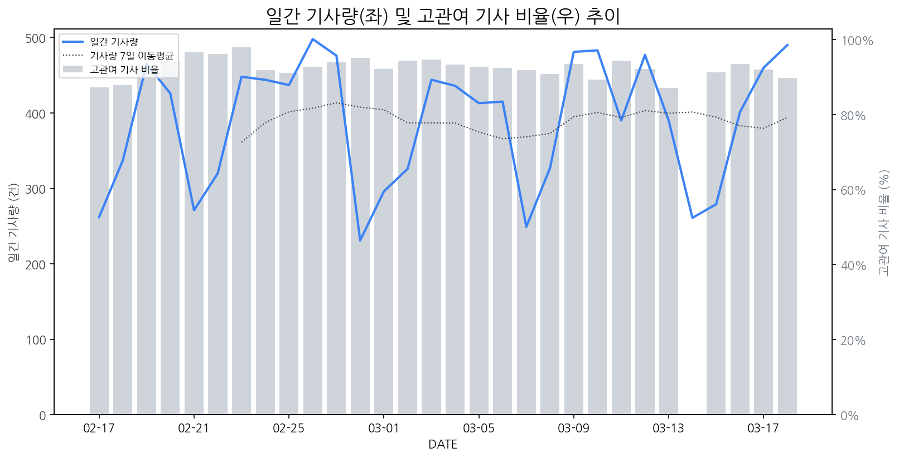

1
시장 활동 지표
기사량 추세 & 이상 징후 탐지
시장의 '전체 기사량'이 평소보다 비정상적으로 급증했는지(Spike)를 차트로 확인하고, LLM이 분석한 급등의 핵심 원인을 파악할 수 있음

고관여 기사란? 산업 연관 키워드로 수집된 기사들 중 디스플레이 키워드에 가중치를 반영하여 도출된 관련성 높은 기사
수집된 기사 수 (2026-03-18)
490
+26% WoW
기사량 변동 수준 (7일 이동평균 대비)
±6.7% 이하
2
오늘의 키워드
급격한 관심 ↑, 주목해야 할 키워드
1
인텔
+4.9σ
인텔의 차세대 18A 공정 및 신형 노트북 프로세서 '코어 Ultra 200HX 플러스' 출시 소식이 집중 조명되었습니다.
Related Metrics
금일 언급량: 15, 전일 대비: +15
Interpretation
신규 칩셋, 디스플레이 수요 증가
Next Step
'인텔' 관련 상세 기사 및 경쟁사 반응 모니터링
2
삼성전자
+4.8σ
정기 주주총회에서 AI 반도체 주도권 확보 및 파운드리 사업 회복 자신감 표명으로 주주 기대감 고조
Related Metrics
금일 언급량: 45, 전일 대비: +17
Interpretation
디스플레이 수요 증가 기대
Next Step
핵심 토픽 'Foldable_Display_Topic' 관련 신호입니다. 3번 섹션(키워드 감성분석)에서 해당 토픽의 감성 변동을 교차 확인하세요.
3
lcd
+2.0σ
기계식 키보드 신제품 출시와 차량용 LCD 백라이트 대규모 수주가 LCD 키워드 급증을 이끌었습니다.
Related Metrics
금일 언급량: 6, 전일 대비: +6
Interpretation
신규 시장 기회 및 수주 증가
Next Step
'lcd' 관련 상세 기사 및 경쟁사 반응 모니터링
4
vr
+1.9σ
대구에서 세계 최고 VR 학술대회 'IEEE VR 2026' 개최 소식에 VR 키워드 관심 급증.
Related Metrics
금일 언급량: 7, 전일 대비: +6
Interpretation
VR 기기 수요 증가 기대
Next Step
'vr' 관련 상세 기사 및 경쟁사 반응 모니터링
3
실시간 Risk 키워드
경계해야 할 시그널 탐지
특정 토픽의 부정 감성 점수가 급등할 때 이를 즉시 탐지하고, "근거 기사" 링크를 통해 리스크의 실체를 빠르게 파악할 수 있음
키워드 분석 결과, 오늘은 걱정할 만한 하락 신호가 없습니다. (부정 언급량 변화: +1.5σ 이내)
4
주요 이벤트 모니터링
실시간 산업 동향 파악을 위한 주요 활동
최근 발생한 주요 기업들의 신제품 출시, 투자 등 주요 이벤트를 제공하여 매일 경쟁사 동향을 확인할 수 있음
LG디스플레이는 매출의 57%를 차지하는 애플에 대한 높은 의존도에도 불구하고, 차세대 기술인 유리기판을 경쟁 비밀병기로 꺼내 들었다. 이는 향후 디스플레이 시장에서의 경쟁 우위를 확보하기 위한 전략으로 풀이된다.
Impact
LG디스플레이의 유리기판 기술 투자는 차세대 디스플레이 소재 및 공정 경쟁 심화를 야기하며, 관련 기술을 보유하지 못한 경쟁사들에게는 위협 요인이 될 수 있다.
Next Step
유리기판 기술 개발 및 양산 능력 확보에 집중하여 기술 격차를 벌리고, 애플 외 신규 고객 확보를 위한 다각적인 영업 활동을 병행해야 한다.
최근 전기차 관련주들이 긍정적인 시장 흐름을 보이며 상승세를 타고 있습니다. 특히 삼화콘덴서, 한온시스템, 삼영, 기아, LS머트 등이 주목받고 있습니다.
Impact
이러한 전기차 시장의 성장세는 차량 내 디스플레이 수요 증가와 더불어, 전기차용 디스플레이 패널 및 관련 부품 시장의 활성화에 긍정적인 영향을 미칠 수 있습니다.
Next Step
디스플레이 제조 기업은 전기차용 고성능, 고내구성 디스플레이 기술 개발 및 생산 능력 확대를 통해 관련 시장 선점에 나서야 합니다.
인텔의 18A 공정 기술과 팬서레이크 CPU가 성공적으로 출시되어 성능 및 전력 효율 측면에서 상당한 개선을 이루었습니다. 이는 인텔의 기술 경쟁력 강화와 CPU 시장에서의 입지 확대를 의미합니다.
Impact
인텔 CPU의 성능 및 효율 향상은 PC, 노트북, 서버 등 디스플레이가 탑재되는 기기의 전반적인 성능 향상 및 전력 소비 감소로 이어져, 디스플레이 패널의 고해상도, 고주사율, 저전력화 요구를 더욱 가속화할 수 있습니다.
Next Step
디스플레이 제조 기업은 인텔의 신기술 적용 기기 확대에 맞춰 고성능, 고효율 디스플레이 솔루션 개발 및 차세대 디스플레이 기술 확보에 집중해야 합니다.
애플이 창립 50주년을 기념하며 혁신적인 성과를 되돌아보고, 인공지능(AI) 시대를 맞아 새로운 도약을 준비하고 있음을 발표했습니다. 이는 회사의 미래 성장 동력 확보를 위한 전략적 방향을 제시하는 이벤트입니다.
Impact
애플의 AI 시장에 대한 적극적인 진출 의지는 관련 디스플레이 기술(예: AI 연동 고화질/고성능 디스플레이, VR/AR 기기용 디스플레이)의 연구 개발 및 수요 증대를 촉진할 것으로 예상됩니다.
Next Step
디스플레이 제조 기업은 애플의 AI 전략에 부합하는 차세대 디스플레이 기술 개발에 집중하고, AI 통합형 디바이스 시장에서의 경쟁력을 강화하기 위한 협력 방안을 모색해야 합니다.
엔비디아가 데이터센터부터 엣지까지 AI 워크로드를 위한 RTX PRO 4500 블랙웰 서버 에디션을 출시했습니다. 이는 고성능 컴퓨팅 및 AI 추론/학습 분야의 성능 향상을 목표로 합니다.
Impact
데이터센터 및 엣지 디바이스에서 AI 처리 능력 향상은 고해상도, 고주사율, 다중 디스플레이 지원 등 더욱 복잡하고 뛰어난 디스플레이 경험에 대한 수요를 증가시킬 잠재력이 있습니다.
Next Step
디스플레이 제조 기업은 RTX PRO 4500과 같은 AI 가속기 탑재 서버와의 호환성 강화 및 고성능 AI 기반 디스플레이 솔루션 개발을 고려해야 합니다.